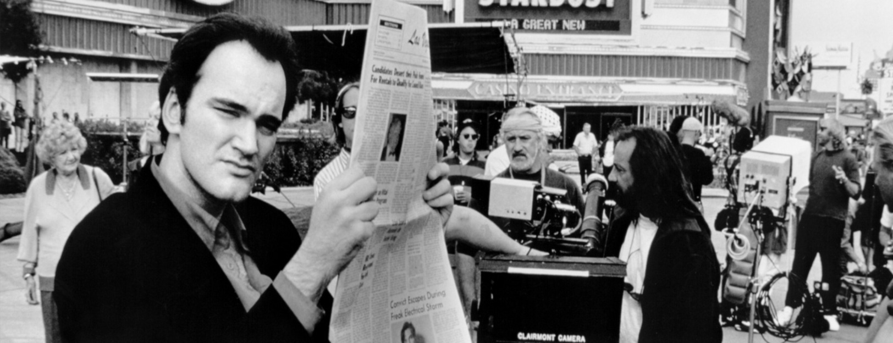
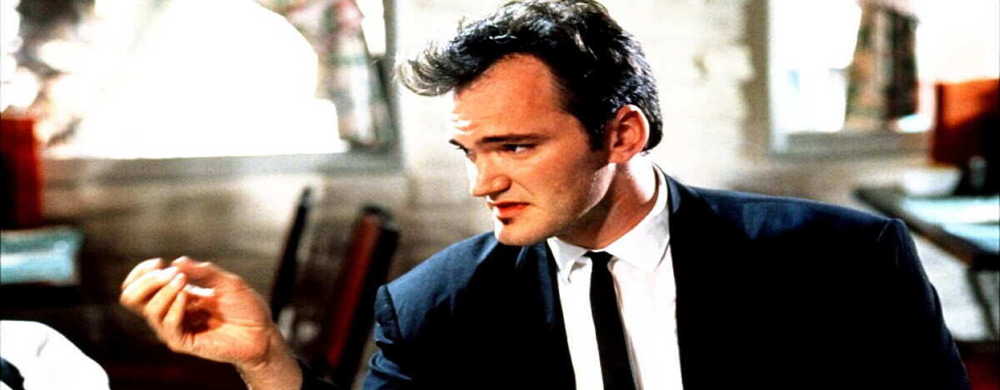

.jpg)

Quentin Jerome Tarantino es director de cine, guionista, productor y actor, nacido el 27 de marzo de 1963, en Knoxville, Tennessee. Algunas de sus películas se encuentran entre las obras cinematográficas más importantes de finales del siglo XX y de lo que va desde el Siglo XXI
Las películas de Tarantino se caracterizan por tener un gran contenido de violencia (la mayoría de sus personajes se encuentran en la delgada línea entre lo moral y lo inmoral), privilegian el diálogo, tienen un elenco coral, juegan con las estructuras narrativas y desarrollan el humor negro. Quentin Tarantino ha ganado dos premios Oscar al "Mejor guión original" por sus películas: Pulp Fiction y Django Unchained. Además de otros dos Globos de Oro, dos premios BAFTA y una “Palma de Oro” en el Festival de Cine de Cannes. También ha participado en series de televisión y ha sido productor de varias películas de terror y artes marciales.
Los padres de Tarantino son Tony Tarantino, un amante de la actuación y la música, y Connie McHugh, una enfermera, que se haría cargo de él después de su separación. Se mudaron a Los Ángeles y Quentin asistió a Fleming Junior School.
Uno de los primeros acercamientos de Tarantino al cine fue como espectador de películas de artes marciales; otro, como amante del cine de terror: cuando era niño su película favorita era Abbott y Castello conoce a Frankenstein, de 1948, donde el humor y la muerte se entremezclan.
Para mantenerse económicamente, Tarantino consiguió un trabajo en un cine porno y luego en una tienda de videos en Manhattan Beach, este último sería fundamental para su aprendizaje: “Era el mejor trabajo que tenía hasta que fui director”, dijo. Fue allí donde escribió sus dos primeros guiones: 'Asesinos natos' y 'Amor a quemarropa'. Con el dinero que sacó de su venta financió su primera película, 'Reservoir dogs', que contó con Harvey Keitel desde el primer momento debido al guión. En 1992 inició su carrera como cineasta independiente con el estreno de Reservoir Dogs, considerada por la revista Empire como «la mejor película independiente de todos los tiempos».
Más tarde diría: “Cuando la gente me pregunta si fui a la escuela de cine, yo les digo: no, fui a ver películas”.
“Los Ocho Más Odiados” nos involucra en las misiones de dos caza-recompensas el Mayor Marquis Warren (Samuel L. Jackson), un hombre de color retirado de la división de caballería; y John Ruth (Kurt Russell), quienes llevan a como prisionera a Daisy Domergue (Jennifer Jason Leigh), para cobrar una jugosa cantidad de dinero en un pueblo llamado Red Rock. Pero una fuerte tormenta de nieve les obliga a quedarse en una posada con otros 5 desconocidos. Es ahí donde empezará un enfrentamiento de enigmas, dudas, enfrentamientos y paranoia entre estos sujetos que los llevará a mostrar sus oscuros pasados y sus metas sin importar los obstáculos.
Para los que ya están familiarizados con el estilo de “spaghetti western” que emplea Tarantino en sus películas, este será un “tributo”, “reciclaje” y “uso de técnicas” en la cinematografía en una compilación de 3 horas de duración con su acostumbrada violencia, y lenguaje vulgar explícito. A diferencia de sus otras cintas, esta es la que produce más giros y misterios en los personajes a lo largo de esta misma.
Otro de los puntos cruciales de esta cinta es su música. Y sin duda Tarantino en esta película buscó al hombre indicado: Ennio Morricone, quien logra atraparnos desde principio a fin y darle intensidad a momentos climáticos a la película; y de paso demostrando porque es uno de los más grandes compositores del cine.
Después de borrar dos nombres de su Lista de la Muerte, “La novia” pone la mira en Budd y Elle Driver, los únicos sobrevivientes del equipo de asesinos que la traicionaron. Todo conduce al enfrentamiento final con Bill, su exmaestro y expareja que ordenó su asesinato.
La segunda parte en la épica de venganza de Quentin Tarantino, "Kill Bill: La venganza, volumen 2" tiene todo lo que hace buena a su predecesora. Sin embargo, ésta tiene más de western, contrario a la primera parte que es más cerca al cine de artes marciales. Quizá haya menos combates, pero la intriga, violencia y diálogos geniales siguen presentes.
El actor Rick Dalton es la antigua estrella de un western de televisión. Él y su leal doble de acción, Cliff Booth, buscan el éxito en un Hollywood que ya no reconocen. Sin embargo, descubre que tienen por vecina a la famosa actriz Sharon Tate, esposa del cineasta Roman Polanski.
La “novena de Tarantino” es, antes que nada, una carta de amor al Hollywood con el que creció y le fascinó. Después de “Bastardos sin gloria” es la segunda película en la que lidia con acontecimientos reales, a partir de los que construye una comedia más contenida en su violencia y diálogo que su filmografía previa.
Un viaje hacia la cultura pop hollywoodense de los sesenta, con geniales actuaciones de Brad Pitt, Leonardo Di Caprio y Margot Robbie.
Con ayuda de un carismático cazarrecompensas alemán, un esclavo liberado sale en busca de su esposa para salvarla de la esclavitud. Para ello, tendrá que lidiar con el brutal dueño de una plantación de algodón en Mississippi.
Fiel a la tradición de Quentin Tarantino, ésta es una historia de violencia y despiada venganza, ahora trasladada al género western, pero con el particular giro de que el héroe es un esclavo. Cargada de homenajes al género brillantes diálogos y actuaciones de lujo por parte de Jamie Foxx, Cristoph Walts, Leonardo Di Caprio y Samuel L. Jackson, "Django sin cadenas" es una brutal película tan sanguinaria y estilizada como todas sus predecesoras en la filmografía de Tarantino. Quizá su único "pero" es su excesiva duración cercana a las tres horas.